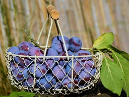

Miért fogyasszunk sok gyümölcsöt?
A zöldségek és a gyümölcsök nagyon fontos szerepet töltenek be az egészségünk
megőrzésében. Nagyon
sok vitamint, ásványi anyagot és antioxidánst tartalmaznak, amelyek felveszik a harcot a szabad
gyökökkel szemben. A szabad gyökökről azt tartják, hogy számos betegség kialakulásáért felelősek,
például a különböző szívbetegségek, a cukorbetegség és a rák.

A szilva
A nemes szilva vagy európai szilva a rózsafélék családján belül a Prunus nemzetségbe
tartozó fa. Csonthéjas termése fontos gyümölcs, termesztése jelentős. Világszerte más-más fajokat
termesztenek, vannak amerikai (P. nigra, P. americana), és kínai (P. simonii), japán (P. salicina)
fajok. A P. domestica hazája Közép-Ázsiától a Fekete-tengerig, Közép-Európáig tehető. A ringló az egyik
alfajának az egyik változata (P. domestica subsp. italica var. claudiana). A P. domesticának Linné
1753-ban 7 alfaját különböztette meg. Gyökérzetének kártevője a cserebogár.
Fogyasztása
A szilva vásárlásánál érdemes odafigyelni, hogy hibátlan szemeket vegyünk. Ne legyenek
túlérettek, de a kőkemény, teljesen éretlen szemektől is óvakodjunk. A szilva hamar megérik az
otthonunkban is, így csak akkor vegyünk, ha tudjuk: 1-2 napon belül felhasználjuk vagy megesszük.
Sokféleképpen felhasználhatjuk. Kitűnő lekvárt készítenek belőle a téli hónapokra, de befőzésre is
alkalmas. A hullott szilvából készítik a hungarikumnak számító szilvapálinkát, és a szilva adja a
legjobb aszalványt. Fogyaszthatjuk nyersen - gyümölcsként, gyümölcssalátákban, kedvelt főzve,
gyümölcslevesekben is. Az aszalt szilva kitűnő rágcsálnivaló, de jól illik egyes húsételekhez, különösen
a vadakhoz. Az aszalt szilvában is megvan, ami a friss gyümölcsben, ráadásul töményebben. Főzött gombóc
töltelékének is használatos, ennek közkedvelt módja, hogy fahéjas cukorral ízesítve hajtogatják a
krumplis-vajas gyúrt tésztát..